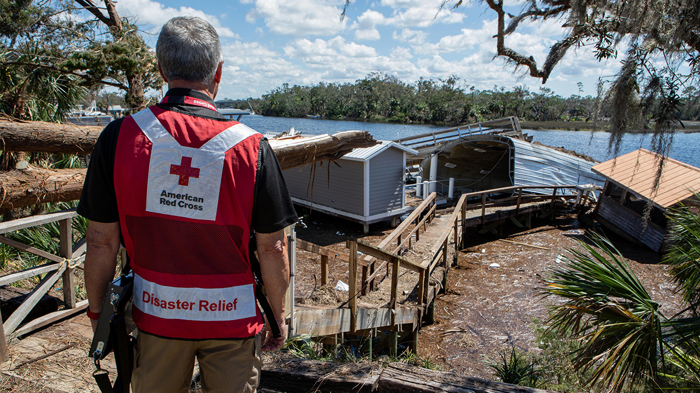

Support and Recovery
Rebuilding takes time, resources, and community. As you explore Helene’s journey, you’ll also find opportunities to contribute to the recovery efforts for those impacted by the storm. Every action counts, from donating to spreading awareness about the effects of climate change on our world. Your support is crucial in helping the victims of Hurricane Helene recover. Here are a few ways you can contribute: